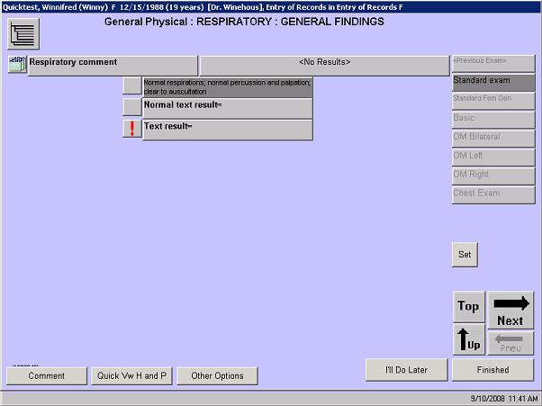

|
Example

Navigating in a Drilldown Screen
The drilldown screen has special navigation buttons:
- Top: Takes the user to the top-most observation level
- Up: Takes the user one level up from the current observation
- Next: Takes the user to the next simple observation
- Prev: Takes the user back to the previous simple observation

 NOTE: When viewing a screen that has a Top button, always select Top before selecting Finished so that you can return to the top-most level of the observation. This gives you the opportunity to review all the data entered and ensure that no areas have been inadvertently skipped. Selecting Finished will close the observation and return you to either the previous screen or take you to the next screen in the workplan. NOTE: When viewing a screen that has a Top button, always select Top before selecting Finished so that you can return to the top-most level of the observation. This gives you the opportunity to review all the data entered and ensure that no areas have been inadvertently skipped. Selecting Finished will close the observation and return you to either the previous screen or take you to the next screen in the workplan.
Entering Data in a Drilldown Screen
In addition to using the Standard Exams to populate the drilldown screen, the user can:
- Select the left-hand bar with the observation description to populate the default for that observation. (If a default has been saved.) See How to: Set Defaults for a Drilldown Screen for details.
- Select the bar to go to the next level of observations and either select or enter the data for those child observations
Want to Learn More?
Related Solutions
Concept: Standard Exams
Concept: Yes/No Format
Concept: Observations
How to: Modify an Existing Standard Exam
How to: Set Defaults for a Drilldown Screen
Related Education Opportunities
Provider
|